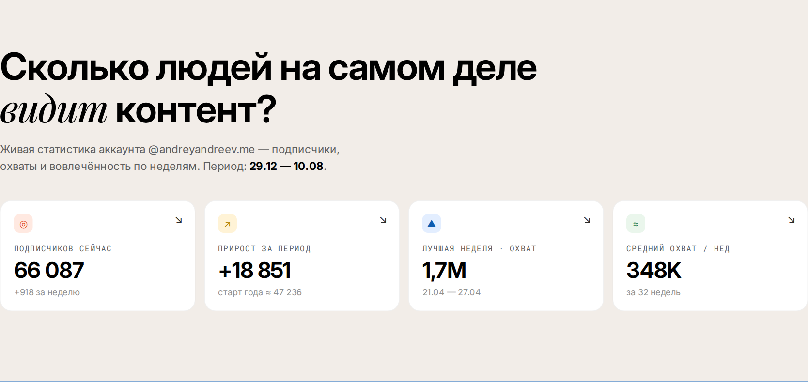
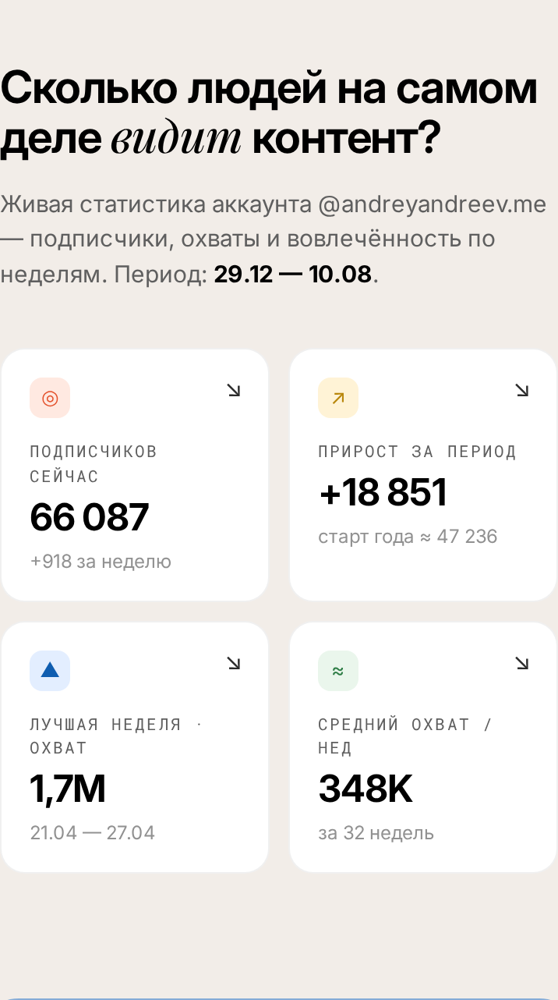
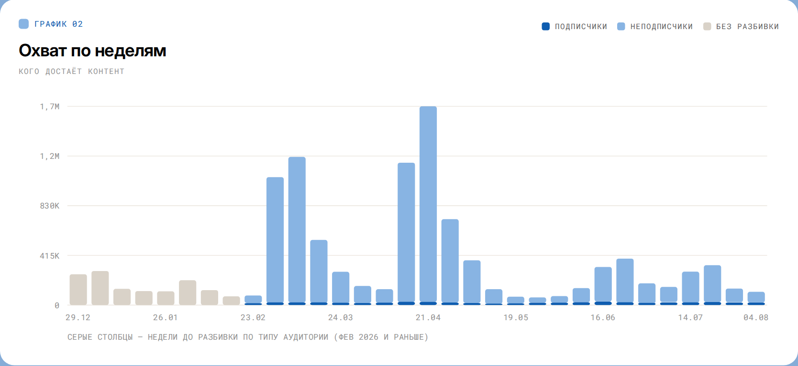
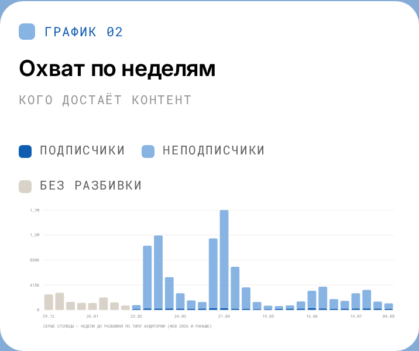
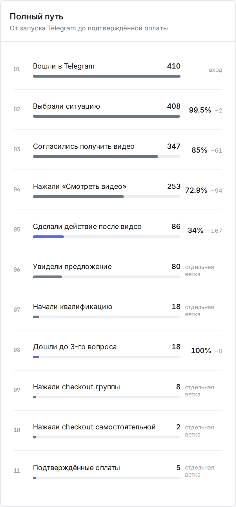

3 месяца
350 000 ₽
Индивидуальная работа с Андреем Андреевым над позиционированием, контентом, аудиторией, офферами и воронкой. С AI-агентами, настроенными под твой бизнес и твой голос.
Сначала коротко обсудим твою ситуацию и поймём, подходит ли тебе этот формат.
Проблема обычно не в дисциплине и не в недостатке идей. Не хватает системы, которая связывает знания предпринимателя, контент, аудиторию, продукт и продажи.
Я веду живую недельную аналитику своего Instagram: рост аудитории, охваты среди подписчиков и неподписчиков, сохранения, репосты и комментарии.




AI не пишет вместо тебя. Он помогает работать с тем, что уже есть {в твоей голове и бизнесе}.
В основе контента остаются знания, опыт, мнение, истории, решения и язык предпринимателя. Финальное слово всегда за автором.
Разбираем бизнес, продукт, текущий блог, продажи, сильные стороны автора и существующую аудиторию. Результат: понятно, какую роль блог должен выполнять в бизнесе и по каким признакам оценивать его работу.
Определяем, что ты хочешь занять в голове аудитории, о чём говоришь и почему тебя должны слушать. Результат: можешь ясно объяснить, для кого твой блог и какую ценность он создаёт.
Разделяем аудиторию по ситуациям, задачам и готовности покупать. Результат: вместо одной абстрактной аудитории — конкретные сегменты с разными запросами.
Определяем главные смысловые линии блога, типы публикаций и связь каждой линии с продуктом. Результат: больше не нужно каждый раз придумывать, о чём говорить.
Собираем опыт, истории, кейсы, решения, принципы, мнение и рабочие материалы.
Настраиваем агента, который работает с базой знаний, стилем, дизайн-системой и правилами автора.
Создаём понятный цикл: идея → материал из базы → черновик → редактура автора → дизайн → публикация → аналитика.
Публикуем материалы, смотрим реакцию аудитории и корректируем темы, форматы и подачу на основании реальных данных.
Определяем, что предлагать разным сегментам аудитории и в какой момент.
Связываем контент, диалог, лид-магнит, квалификацию, предложение и продажу.
Проводим одну небольшую кампанию или тест оффера на существующей аудитории.
Разбираем результаты, исправляем слабые места и формируем план самостоятельной работы на следующие 90 дней.
Агенты остаются рабочими инструментами предпринимателя после завершения сопровождения.


В Funnel OS я собираю путь от первого действия до подтверждённой оплаты. Поэтому видно не абстрактное «контент не работает», а конкретный этап, на котором теряется движение.

Андрей не становится твоим SMM-отделом. Он помогает построить систему, которая остаётся у тебя.
Я Андрей Андреев. Я помогаю предпринимателям связывать контент, продукт, аудиторию и продажи в одну систему.
Последнее время я почти полностью погрузился в работу с AI-агентами. Сначала собирал их для собственных задач, а теперь помогаю клиентам создавать агентов вокруг их базы знаний, дизайн-системы и правил.
Но технология здесь вторична. В центре остаётся предприниматель: его опыт, мышление, продукт и отношения с аудиторией.
Выбери длительность индивидуального сопровождения. Конкретные задачи и фокус работы обсудим лично.
3 месяца
350 000 ₽
6 месяцев
600 000 ₽
Обсудить сопровождение с Андреем лично.